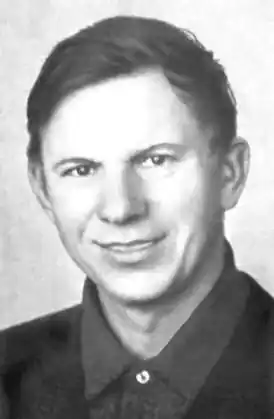

БИКОВ, Василь (Быкау, Васіль, — 19.06.1924, с. Бички Ушацького р-ну Вітебської обл. — 23.06.2003, Мінськ) — білоруський прозаїк.Свою біографію письменник вмістив у три книжкових абзаци: природна стриманість не дозволяє йому багато розповідати про себе. Все його життя так чи інакше відобразилось у його книгах.
Народився Василь Володимирович Биков у звичайній селянській родині. Закінчивши школу, вступив на скульптурне відділення Вітебського художнього училища, але через нестатки змушений був залишити навчання.За день до початку війни поїхав у Шостку (українське місто) до дядька, знову мріючи про навчання. Тут його застала війна. За кілька днів хлопець виявився повністю відрізаним від своєї родини, яка залишилася на окупованій території Білорусі. Вчитися йому довелося у Саратовському піхотному училищі, куди направляли щойно мобілізованих. З осені 1943 р. перебував на фронті. Двічі поранений, пізнавши "кров і піт" піхоти та "госпітальні муки", він вийшов з війни, збагачений величезним досвідом.
Перші два його оповідання про війну — "У той день" та "У першому бою" — з'явилися 1949 р. на "Літературній сторінці" "Гродненской прауды". Почав писати з малих форм — оповідання, рецензії, статті. Декілька років відбувалося становлення письменника: він шукав себе у всьому — у виборі жанру, теми, часу оповіді. Створивши низку оповідань як про війну, так і про мирне життя міста і села ("Смерть людини", 1951; "Утрата", "Вночі", 1956; "Щастя", "На озері", 1957; "Фруза", "Троє", 1959), а також героїко-пригодницьку повість "Останній боєць", на рубежі 50—60-х років видав у бібліотечці журналу "Вожик" збірку сатиричних мініатюр "Хід конем". Критики поділяють всі твори Бикова на воєнні та побутові, які були набагато слабкіші. Справжній талант письменника виявився саме у воєнній прозі."Журавлиний крик" (1959) можна вважати першою значною повістю, присвяченою героїчній тематиці. Вона була видана масовим тиражем 1961 р. в книзі, в яку, крім неї, ввійшло і кілька ранніх оповідань, що найбільш яскраво відображали творчий пошук письменника ("Смерть людини", "Обозник", "Вночі", "На озері", "Фруза" та ін.). У "Журавлиному крикові" автор уперше спробував у межах невеликої повісті проаналізувати мотиви поведінки бійців, які після наступу ворога розділилися на героїв і зрадників. Доля кожного з шести солдатів передана в окремому розділі-новелі, де кожен розповідає або згадує про себе, про свій шлях до залізничного переїзду, де треба затримати ворога. Останній і головний штрих до людського життя кладе тут смерть — смерть героя або зрадника. "Третя ракета" (1961) була написана одразу після "Журавлиного крику". Оповідь у повісті ведеться від імені головного героя — солдата Лозняка, який, цілий рік пролежавши у шпиталях, потрапив на передову. До цього він воював на Вітебщині у партизанському загоні. Головна думка твору висловлена самим Лозняком, який випадково уцілів у бою: "Як усе це складно! На скільки ж фронтів треба боротися — і з ворогами, і з різною сволотою поряд, нарешті, з собою. Скільки перемог треба одержати, щоб вони з'єднались у ту, яка буде написана з великої літери? Як мало однієї рішучості, добрих намірів і скільки ще треба сили!" Після виходу друком повість було інсценізовано і включено у репертуар різних театрів. До недавнього часу вона не сходила зі сцени Київського молодіжного театру, а у 1963 р. була екранізована. За неї письменника було удостоєно Державної премії ім. Я. Коласа. "Зрада" (1960) — повість, в основі якої також пережитий досвід фронтових подій письменника. Невелика група солдатів-артилеристів проривається до своїх. Під час цього прориву розкриваються їхні характери: як і в "Журавлиному крикові", вони розподіляються на мужніх, чесних бійців і зрадників, але у цій повісті відбувається "моральний двобій". Вперше у творчості Бикова з'являється мотив дороги як шляху вияву й становлення характерів, як загальної спрямованості до однієї мети, зрештою, як символу життя. Згодом письменник використав цей мотив у багатьох повістях ("Дожити до світанку", "Піти й не повернутися", "Вовча зграя", "Альпійська балада", "Круглянський міст "), У 1963 р. з'явилася повість "Альпійська балада". У центрі її — самовіддане і зворушливе кохання, яке зазнає випробувань у пеклі війни. Воно стає основою роздумів письменника про життя людей на війні. Головними героями твору є молодий солдат-білорус Іван Терешка та дівчина-італійка Джулія. Вони тікають у гори з концентраційного табору, розташованого десь у австрійських Альпах. Героїв переслідують і наздоганяють фашисти, Іван гине, а Джулія випадково врятовується. Такий сюжет першої й останньої биковської "балади", яка багато разів перевидавалася, перекладена багатьма мовами. За мотивами цього твору написано сценарій кінофільму (1966) і поставлено балет у Білоруському театрі опери та балету. Повість поєднує, здавалося б, несумісне — лірику, романтику життя і його суворий реалізм.Протягом 1964-1965 pp. Биков створив повісті "Пастка", "Атака з ходу", "Його батальйон", ставлячи собі за мету глибше зазирнути в душу солдата, який опинився у безвиході, позбавлений будь-якої можливості боротися з ворогом. Сила обставин, що тиснуть на людину, захоплює письменника. Він починає "експериментувати" з моральною стійкістю героїв, не просто змальовуючи людину за тяжких обставин війни, а розглядаючи її в "пеклі життя". Це пекло і фашистського полону ("Пастка"), і бою на передовій ("Атака з ходу", "Його батальйон"), і німецької окупації ("Знак біди", "Обеліск"), і партизанського відступу ("Вовча зграя" "Піти й не повернутися "), і невдалого рейду в німецький тил ("Дожити до світанку"). За таких нелюдських, "пекельних" умов боєць, що йде на подвиг, — уже герой, навіть якщо через смерть він не зміг його здійснити, як у повісті "Дожити до світанку", де лейтенант Івановський замість складу німецьких боєприпасів, вмираючи, зумів підірвати лише одного німця з возом соломи. Будь-який вияв моральної стійкості, людяності на війні — це подвиг. Учитель Мороз в "Обеліску "не вбив жодного німця, але він справжній герой, бо добровільно йде на страту зі своїми учнями. "Мертвим не болить"(1965), мабуть, найбільш автобіографічний твір письменника. Героєві роману, Василевичу, поталанило — він залишився живий, але щось у ньому нагадує людей, про яких Е. Хемінґвей сказав, що вони ніколи не зможуть повернутися з війни. Навіть у мирний час Василевич не може заспокоїтися, пам'ять постійно повертає його до огненних літ, а в серці назавжди залишився біль. Це біль не тільки від втрат друзів, воєнних поразок, а перш за все — біль за людину, яка не зробила моральних висновків з уроків історії. Психологічна, моральна ускладненість образів, вчинків вирізняє повісті Бикова цього періоду. Він намагався розкрити усю правду війни, яку сам пізнав сповна. Цей шлях привів письменника до створення "партизанського" циклу повістей ("Круглянський міст", 1968; "Сотников", 1970; "Обеліск", 1971; "Дожити до світанку", 1972; "Вовча зграя", 1974; "Піти й не повернутися", 1978), відзначених Державними преміями. "Круглянський міст", перша повість, є своєрідним переходом до нового етапу творчості. Маленька група партизанів отримала завдання спалити міст через річку, але при першій же спробі загинув командир. Командування бере на себе Бритвін, який має власний план виконання завдання. До мосту, що охороняється, посилають сільського хлопця, який у бідоні з-під молока повіз вибухівку. Міст підірвано, але юнак загинув. Молодий партизан Стьопка Товкач розуміє аморальність цього плану. Він чинить самосуд над командиром-самозванцем, стріляє в нього, за що й потрапляє до ями штрафників. У повістях "Сотников", "Обеліск", "Дожити до світанку "автор начебто навмисне ускладнює ситуацію — позбавляє героїв здоров'я, сил і такими підводить їх до головного випробування, зосереджуючи увагу на силі духу. У повісті "Знак біди" ("Знак бяды", 1982) письменник порушує питання про людяність, причини її незнищенності. У центрі повісті — Петрок і Степанида, життя яких змальоване від наймитської юності до смертного часу, коли вони гинуть на своєму хуторі, але не підкоряються фашистам. Дія повісті "Кар'єр" (1986) відбувається восени 1941 р. в глухому білоруському містечку, окупованому німецько-фашистськими загарбниками. Вперше у творчості письменника воєнна тема органічно пов'язана з нашою сучасністю, досліджується вплив давно пережитого на долі людей старшого і молодого поколінь. "Облава" ("Аблава", 1988) — остання повість, присвячена трагічним подіям мирних років.Останні кілька років народний письменник Білорусі Василь Биков проживав спочатку у Фінляндії, потім — у ФРН, зазначаючи при цьому: "Мої політичні розбіжності з президентом Білорусі О. Лукашенком не означають, що я повинен стати політемігрантом". У 2002 р. письменник разом із своєю дружиною переїхав у Чехію. Після перенесеної операції з видалення ракової пухлини Биков приїхав у Білорусь на реабілітацію. 23 червня 2003 року він помер в онкологічній лікарні в Боровлянах, що поблизу Мінська.